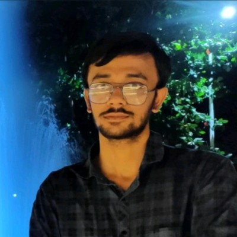

About me
I am a JRF in Mathematics at the Institute of Mathematical Sciences (IMSc), Chennai, having completed my BS-MS degree at IISER Bhopal.
My primary research interest lies in operator algebras—specifically using analytic and algebraic tools to study the properties of spaces and non-commutative structures.
During my MS Thesis, supervised by Dr. Prahlad Vaidyanathan, I explored C*-algebras, group amenability, and group C*-algebras of the discrete Heisenberg group and the discrete free group on two generators (F₂), verifying the Kadison–Kaplansky Conjecture for F₂.
My broader interests include commutative algebra and representation theory of finite groups.
Research interests
Operator algebras · C*-algebras · Non-commutative structures · Commutative algebra · Representation theory
On this website
- Research — my mathematical interests and work.
- CV — academic background and experience.
- Notes — mathematics notes and expository writing.
- Reading & Ideas — books, papers, questions and ideas I find interesting.
- Non-Academic — chess, cricket, incidents and other things.